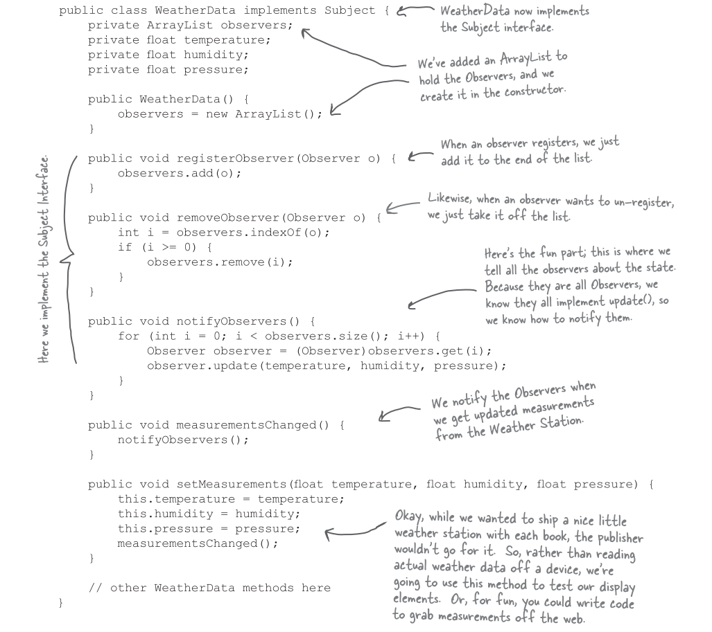
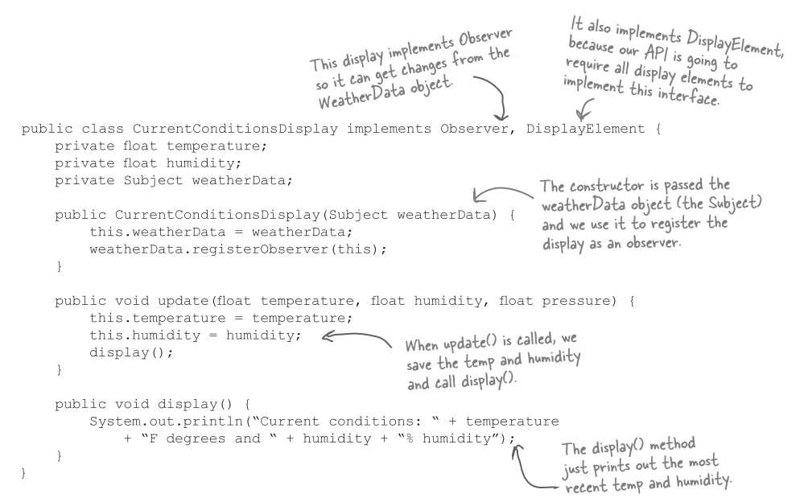
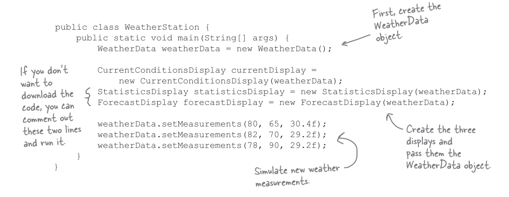
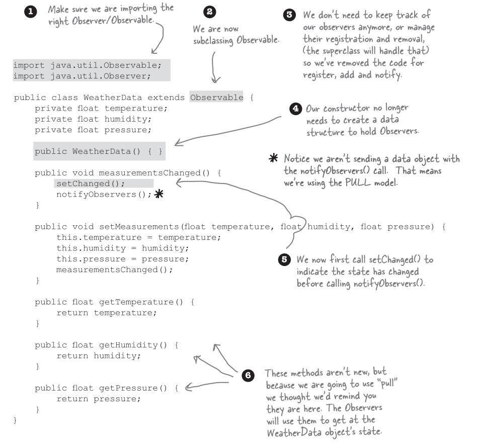

觀察者模式 (Observer pattern)
氣象監測系統
假設我們想做一個網路氣象站，然後必須建立在客戶提供的 WeatherData 物件上，他負責追蹤目前的天氣狀況。接著我們希望建立一個系統，有三個佈告欄，分別顯示目前狀況，氣象統計，以及簡單的預報。當 WeatherObject 物件向該系統要求最新數據時，資料必須即時更新。
而且這是一個可擴充的氣象站，氣象站可公佈一組 API，好讓其他程式員可以寫出自己的氣象佈告欄，並插入此系統中。
氣象監測系統的概況
此系統中的三個份子是氣象站，WeatherData 物件 (追蹤來自氣象站的資料，並顯示在佈告欄上)，以及佈告欄。
我們的工作就是建立一個系統，利用 WeatherData 物件，取得資料，並更新三個顯示佈告欄: 目前狀況，氣象統計，天氣預報。
瞧一瞧送到的 WeatherData 類別

我們的工作就是實踐 measurementsChanged()，好讓他更新目前狀況，氣象統計，天氣預報的顯示佈告欄。
先看一個錯誤的示範
我們的實踐有什麼不對?
我現在就來看看觀察者模式，然後再回來看看如何將此模式應用到氣象觀測站。
認識觀察者模式
出版者 + 訂閱者 = 觀察者模式
如果你了解報紙的訂閱是怎麼一回事，其實就知道觀察者模式是怎麼一回事，只是名稱不太一樣: 出版者改稱為 "主題" (Subject)，訂閱者改稱為觀察者 (Observer)。

觀察者模式運行範例


定義觀察者模式
觀察者模式定義了物件之間的一對多關係，如此一來，當一個物件改變狀態，其他相依者都會收到通知並自動更新。

觀察者模式類別圖
鬆綁的威力
觀察者提供了一種方式，讓主題和觀察者之間鬆綁。
當兩個物件之間被鬆綁，它們依然可以互動，但是不太清楚彼此的細節。
- 關於觀察者的一切，主題只知道觀察者有實踐特定介面 (也就是 Observer 介面)。
- 主題不需要知道觀察者的具體類別為何，做了些什麼，還有其他細節。
- 任何時候都可以加入新的觀察者。
- 事實上，在執行期我們可以用新的觀察者取代既有的觀察者，主題會讓這一切順暢運行。同樣的，可以在執行期動態地移除觀察者。
- 有新型態的觀察者出現時，主題的程式碼無須修改。
- 若有新型態的觀察者出現時，只須讓新的觀察者實踐此觀察者介面，然後向主題註冊新觀察者即可。主題不在乎觀察者實際的類別為何，只在乎有沒有實踐觀察者介面。
- 我們可以在其他地方運用主題或觀察者，不必將兩著綁在一起。
- 片面地改變主題或觀察者，並不會影響另一方。
設計守則
設計時，盡量讓需要互動的物件之間關係鬆綁。
回到設計氣象站
三個佈告欄的類別應該有一個指向 WeatherData 的 subject 指標，只是這裡沒畫上去，因為會太亂。
實踐氣象站

在 WeatherData 中實踐此主題介面

建立佈告欄

測試氣象站

執行程式
使用 Java 內建的觀察者模式
Java 內建的觀察者模式如何運作
- 如何把物件變成觀察者
- 使用
deleteObserver()和addObserver()方法 - 觀察者要如何送出通知
- 先呼叫
setChanged()方法，標記狀態已改變的事實。 - 然後呼叫
notifyObservers()或是notifyObservers(Object arg)。 - 觀察者如何收到通知
- 跟以前一樣，只是方法的參數不太一樣:
update(Observerable o, Object arg)。
setChanged() 是怎麼一回事?
setChanged() 用來標示狀態已經改變的事實，好讓 notifyObservers() 知道應該更新觀察者。若呼叫 notifyObservers() 之前沒有先呼叫 setChanged()，觀察者就 "不會" 被通知，讓我們來看看 Observerable 內部，以了解這一切:

setChanged() 可以讓你在更新觀察者時，有更多的彈性。比方說，如果沒有 setChanged() 方法，由於氣象站量測很準確，以至於溫度計每十分之一度就會更新，這會造成 WeatherData 過度頻繁更新觀察者，我們不希望這樣的事情發生。如果我們希望差距在半度才更新，就可以在溫度差距達到半度時，呼叫 setChanged()，造成有效的更新。
利用內建的支援更改氣象站的程式

改版 CurrentConditionsDisplay
C++ 內建支援觀察者模式嗎?
不支援，但是有些 C++ 函式庫利用觀察者模式實作出所謂 signal / slot 的機制:
- Qt Signal/Slot
- Boost.Signals2